Illustrated installation booklet
Nintendo Switch
Stable Checked for v0.9.0
Follow these steps to install Sonic Riders on your console. No coding is required. Tick each checkpoint as you go; your ticks stay on this device.
01 / 17 · Nintendo Switch
Before you start

- Check the console’s name. This booklet is for Nintendo Switch. Switch, Switch Lite, and Switch OLED use this stable package. If the console says Switch 2, use the other booklet.
- Check that homebrew already works: Atmosphère custom firmware and Homebrew Menu, already working. Custom firmware lets your console run community-made apps.
- If homebrew is new to you, start with Nintendo Homebrew’s Switch setup guide. Finish that setup before coming back here. The Sonic Riders installer does not set up homebrew.
- Use a 64-bit Windows 10 (1803 or newer) or Windows 11 computer. Connect it to the internet. Windows 11 is recommended. A Mac, phone, or Chromebook cannot run this Windows installer.
- Make at least 4 GB of free space on the computer. Extra room is helpful if your disc needs converting.
- Have the microSD card already used by your working Switch homebrew setup. Leave at least 2 GB free, plus room for any texture packs. Have an SD card reader for your computer.
- Have your own Sonic Riders for GameCube, USA, revision 0 disc image. The next page explains this file.
- Keep the computer awake and plugged in while it builds. Allow 10–40 minutes for a first install. Download speed and computer speed can change this time.
02 / 17 · Nintendo Switch
Prepare your game image

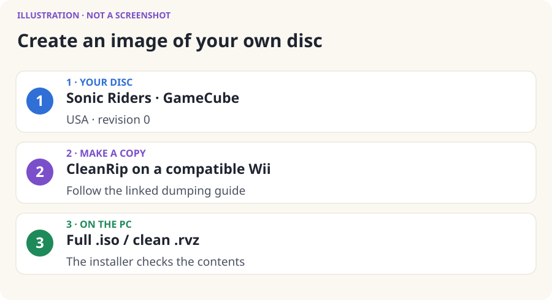
- Find your own USA GameCube Sonic Riders disc. This is the original Sonic Riders, not Sonic Riders: Zero Gravity.
- A disc image is one file holding a copy of a disc. A full image usually ends in
.iso. Copying a disc to this file is called dumping. - If you need to dump it, open the illustrated Wii dumping walkthrough. It uses CleanRip, a disc-copying homebrew app. Follow its GameCube section. You need a Wii that can read GameCube discs and a working Homebrew Channel. The Wii mini, ordinary Wii Family Edition, and Wii U’s Wii mode cannot read these discs.
- Let CleanRip finish. Copy the resulting full
.isofrom its storage device to a folder on your computer. Keep the original file safe. Follow the dumping guide’s file-joining instructions if your dump is split into parts. - Already have a dump? You can select a clean
.isoor.gcm. A clean Dolphin.rvzor.wiaalso works. The installer converts it to.isofor you. Your original file stays unchanged. - Use a clean, full copy. European, Japanese, modified, trimmed, incomplete, GCZ, and CISO images are not accepted. An RVZ made with Remove Junk Data is not a full copy. Renaming a file cannot turn it into the right game.
Optional details for a helper
For helpers: accepted disc ID GXEE8P, revision 0; full ISO size 1,459,978,240 bytes; SHA-1 ce0cecf57034bef8bab7d6f588ce92c85a849613. The installer checks this fingerprint automatically. A filename alone does not prove that a dump is supported.
03 / 17 · Nintendo Switch
Download the correct setup package

- Open the Nintendo Switch release page. GitHub is the website that holds this project’s downloads. You can read the page and download without an account.
- Check the heading. This page should say v0.9.0. This is the stable release for this booklet.
- Scroll down to Assets. Assets means the downloadable files. If the list is folded up, click Assets to open it.
- Click
SonicRiders-Switch-Setup-v0.9.0.zip. You can also use the big download button below. - Wait for the download to finish. Do not choose Source code (zip) or Source code (tar.gz). Those are for developers and do not contain the ready-to-use Windows installer.
04 / 17 · Nintendo Switch
Extract the ZIP file

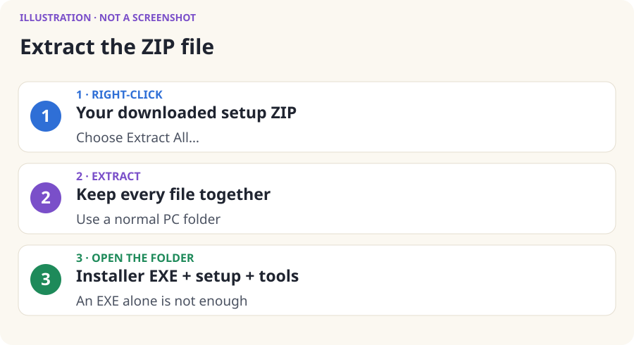
- Open File Explorer. It is the yellow folder app on the Windows taskbar, at the bottom of the screen.
- Click Downloads in the left column. Find
SonicRiders-Switch-Setup-v0.9.0.zip. If you chose a different download location, open that folder instead. - Click the ZIP with the right mouse button. Choose Extract All…. A ZIP stores several files in one file. Extracting restores those files to a normal folder.
- In the extraction window, choose a short place you can find again, such as
C:\SonicRiders. Use English letters and numbers in the path. Spaces work, but accented characters in the path can stop the tools. - Click Extract. Wait until it finishes. Keep all the extracted files together.
- Open the extracted folder. Open
SonicRiders-Switch-v0.9.0if there is one more folder inside. Stop when you can seeInstall Sonic Riders (Switch).exe,setup, andtoolstogether.
05 / 17 · Nintendo Switch
Connect the SD card

- Quit any running game. Power the console fully off using its power menu. Sleep mode is not power off. Follow your homebrew setup’s shutdown instructions.
- Remove the prepared SD card. Put it in your computer’s card reader. If your computer has no matching slot, use a suitable USB reader.
- Open File Explorer. Click This PC in the left column. Look for the card under Devices and drives. A drive is a storage device shown by Windows.
- Open the card. Its root means its very top folder. You should be looking at the existing
switchfolder, alongside your other homebrew files. Do not openswitchyet. - If a working homebrew card has no
switchfolder yet, make one at this top level: right-click an empty space, choose New → Folder, and type exactlyswitch. Leave the other folders alone. - If Windows asks you to format the card, click Cancel. Formatting erases files. Check that the reader supports the card and that it is the right card.
06 / 17 · Nintendo Switch
Open the installer

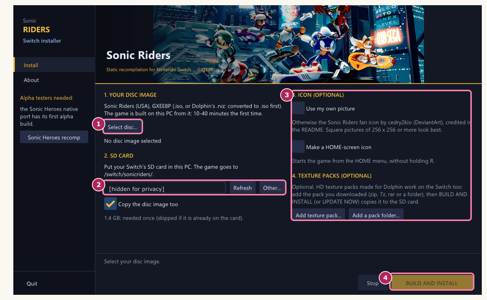
- Go back to the normal folder you extracted on your computer.
- Double-click
Install Sonic Riders (Switch).exe. Double-click means press the left mouse button twice quickly. - Windows may hide the
.exeending. In that case, look for the same name with Application in the Type column. Do not open the command-line BAT file for this illustrated guide. - Check the installer window. It should identify Switch installer.
- If Windows blocks the program, first check that the ZIP came from the exact project release linked above. This installer is unsigned. If you cannot verify the download, stop and ask someone you trust to help. Do not turn off Windows security.
07 / 17 · Nintendo Switch
Select your game image

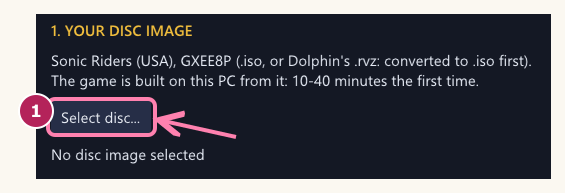
- Click the pink-marked Select disc… button shown in the picture.
- In the file window, open the folder where you saved your own game dump. Single-click the
.iso,.gcm,.rvz, or.wiafile. - Click Open. This selects the file for the installer. You do not need to double-click or mount an ISO in Windows.
- Look below Select disc…. Your selected file’s name should now appear. The installer performs the full game checks when you start the build.
08 / 17 · Nintendo Switch
Select the SD card

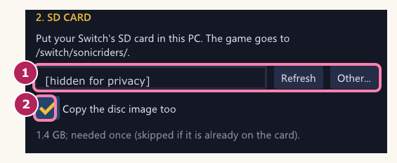
- Find 2. SD CARD in the installer.
- Click Refresh if you inserted the card after opening the installer.
- Click the small downward arrow on the SD card box. Choose your card if it is listed.
- If your card is missing from that list, click Other…. In the folder picker, choose This PC, then your SD card’s top folder. Click the folder picker’s confirmation button. Do not choose the folder holding the installer.
- Check that the card you picked is the same card you opened in the previous page. For a first install, keep Copy the disc image too ticked. This puts the game’s data beside the program.
- If you want to copy files later, choose Keep build on this PC instead. This makes files on the computer only. Use the manual-copy page below afterward.
09 / 17 · Nintendo Switch
Configure installation options

- Leave Use my own picture unticked for a first install. The installer will use its default game icon. If you choose your own picture later, tick it and use Pick picture…. A square picture at least 256 × 256 works best.
- Leave Make a HOME-screen icon unticked for this first install. It is optional. The game will launch from Homebrew Menu without it.
- If you tick the HOME-screen option later, Pick prod.keys… needs your own console’s keys. The option also needs separate console installation steps. Follow the advanced HOME icon instructions with an experienced helper. Never download or share console keys.
- Leave 4. TEXTURE PACKS (OPTIONAL) alone for the first test. Texture packs replace how the game looks. They are not needed to play.
- Later, Add texture pack… accepts your downloaded ZIP, 7z, or RAR pack. Add a pack folder… accepts an unpacked folder. Read the texture pack instructions first. Large packs need extra SD space and can pause the game when a new texture loads.
10 / 17 · Nintendo Switch
Build and install

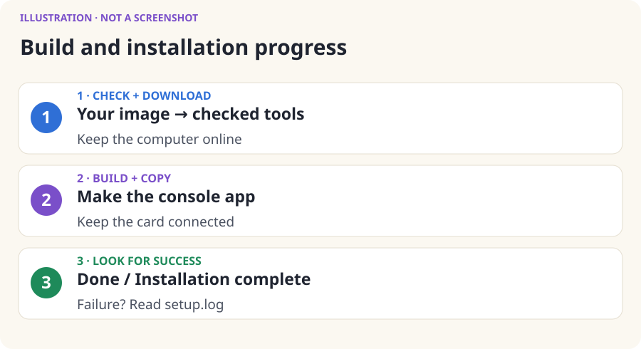
- Click BUILD AND INSTALL at the bottom right. If it is dimmed, read the message at the bottom. It tells you which required choice is missing.
- Leave the installer open. It checks your image, downloads its tools, and builds the program from your own disc. Build means make the program that your console can run.
- Watch the progress messages. Some steps take several minutes. A changing log is a sign that it is working. Keep the internet connected and the SD card plugged in.
- Do not press Stop unless you want to cancel. Do not close the window, unplug the card, or put the computer to sleep while files are being written.
- Wait for Done or INSTALLATION COMPLETE. If you see INSTALL FAILED, go to the help section. Having a folder named
builddoes not by itself mean the build succeeded.
11 / 17 · Nintendo Switch
Open the output folder

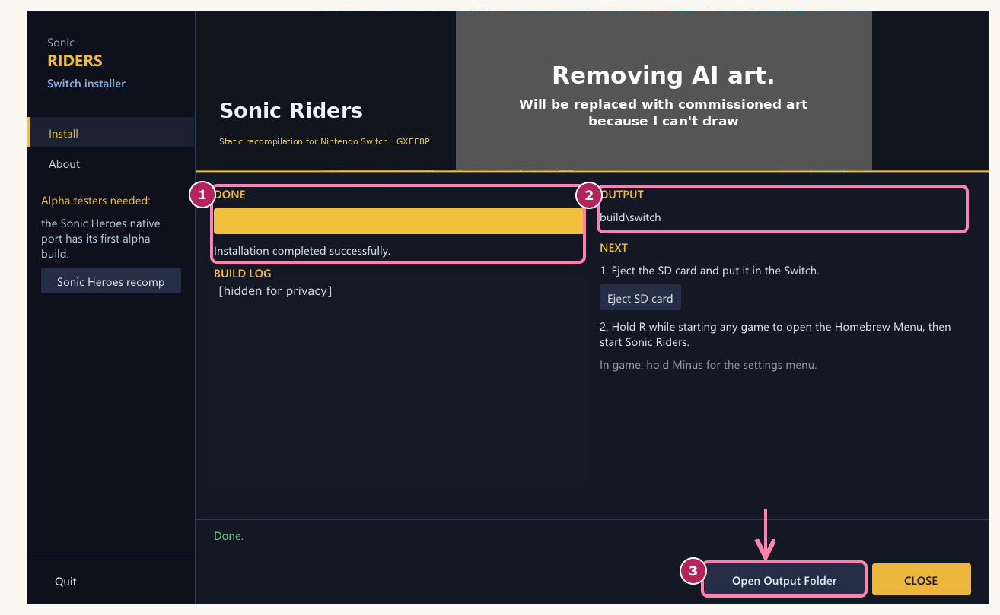
- After success, click Open Output Folder in the bottom action bar. The button stays there when you resize the window.
- File Explorer opens a folder on your computer:
build/switch/. It opens this local folder even if you already disconnected the SD card. - Look for
sonicriders.nro. An.nrois a homebrew app that your console can launch. - If the installer already copied to the correct SD card and reported success, continue to Verify the SD card folder structure. Opening this folder does not copy anything by itself.
12 / 17 · Nintendo Switch
Copy the files manually

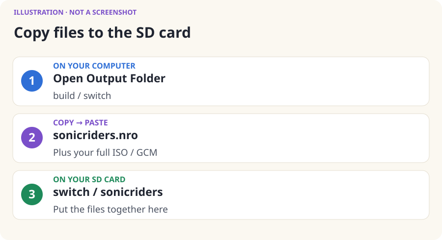
- Use this page only if the installer did not copy to your SD card. Keep the installer’s successful output folder open.
- Open a second File Explorer window. Open This PC, then your SD card.
- Open the card’s
switchfolder. Ifsonicridersis missing inside it, right-click an empty space, choose New → Folder, and name it exactlysonicriders. - In the local output folder, single-click
sonicriders.nro. Press Ctrl+C to copy it. - Open
/switch/sonicriders/on the card. Press Ctrl+V to paste. Wait for the copy to finish. - Copy your own full ISO or GCM into that same folder. An RVZ or WIA cannot be used directly on the console. If the installer converted one, use the generated
.isofrom the extracted installer’sbaseromfolder. - Keep just one supported game image in this game folder. Its name may differ from the example. It must really end in
.isoor.gcm, not.rvz,.zip, or.iso.iso.
13 / 17 · Nintendo Switch
Verify the SD card folder structure

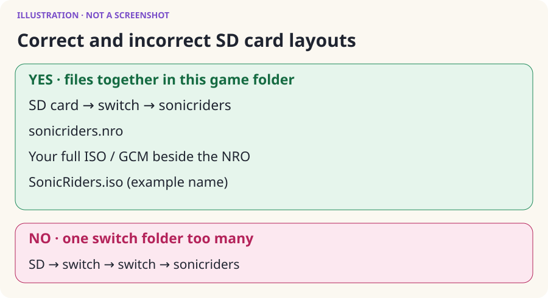
- On the card, open
switch, thensonicriders. Compare it with the picture below. - Check the exact app name:
sonicriders.nro. Do not rename another platform’s app to this name. - Check that your own full
.isoor.gcmis in the same folder as the NRO. The example usesSonicRiders.iso; the installer keeps your ISO’s original name. - If Windows hides file endings, use View → Show → File name extensions on Windows 11. On Windows 10, open View and tick File name extensions. Now check that the app does not end in
.nro.nro. - Leave your other homebrew folders alone. This picture shows only the part that matters to Sonic Riders.
The files needed to start
SD card (top folder)
└── switch/
└── sonicriders/
├── sonicriders.nro
└── SonicRiders.iso ← your full image; its name may differ
After playing or adding packs, you may also see
/switch/sonicriders/ ├── saves/ ← your game progress; keep this ├── settings.ini ← your choices; keep this ├── mods/ ← texture packs/mods, if added; keep this └── cache files ← may appear after playing; keep theseNext page
14 / 17 · Nintendo Switch
Safely eject the SD card

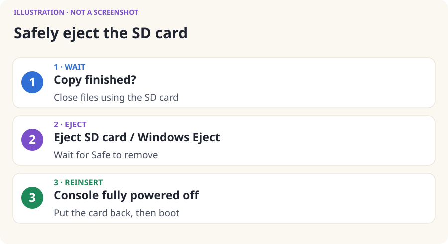
- Wait for all copy windows to finish. Close any files or Explorer windows using the card.
- If the installer has your SD card selected, click Eject SD card. Wait for Safe to remove the SD card now.
- Or use Windows: click the small up arrow near the clock at the bottom right. Right-click Safely Remove Hardware and Eject Media. Choose Eject for your card or reader.
- Wait for Windows to say the hardware can be removed. If it says the card is in use, close the program using it and try again. Do not pull it out during a copy.
- Take the card out of the reader. With the console fully powered off, put the card back in it. Start your usual working homebrew setup.
15 / 17 · Nintendo Switch
Launch Sonic Riders

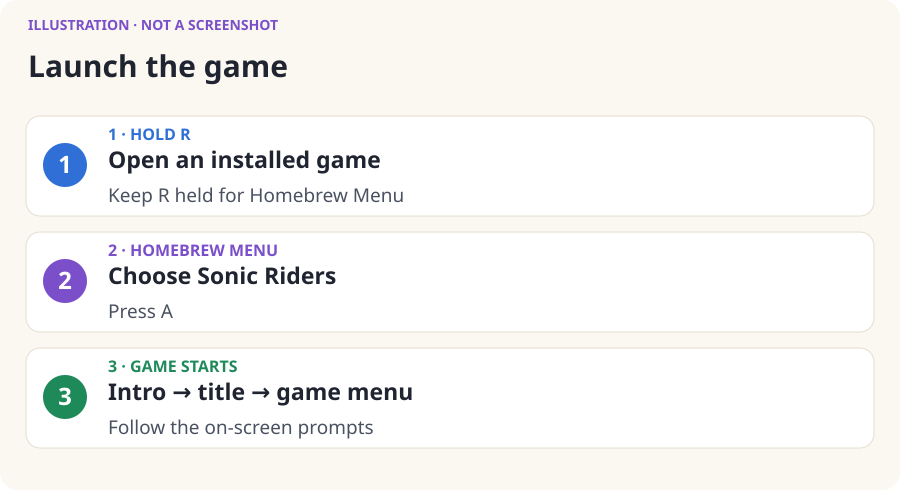
- Start the console in your already-configured Atmosphère environment.
- On HOME, highlight an installed game you can launch. Hold the controller’s R shoulder button while opening the game. Keep holding R until Homebrew Menu opens. If it asks for a user, keep R held while choosing one.
- Use this game-launch route, called full-memory mode or title override. Opening Homebrew Menu through Album gives less memory and is not the route for this game.
- In Homebrew Menu, use the stick or D-pad to highlight Sonic Riders. Press A.
- Wait for the game to start. You should reach the intro or title screen. Follow the game’s on-screen prompts. It may ask to create a memory-card save on the first run.
- When you reach the main menu, you have completed the install. Try a short race before adding optional packs or changing many settings.
16 / 17 · Nintendo Switch
Verify the installed version

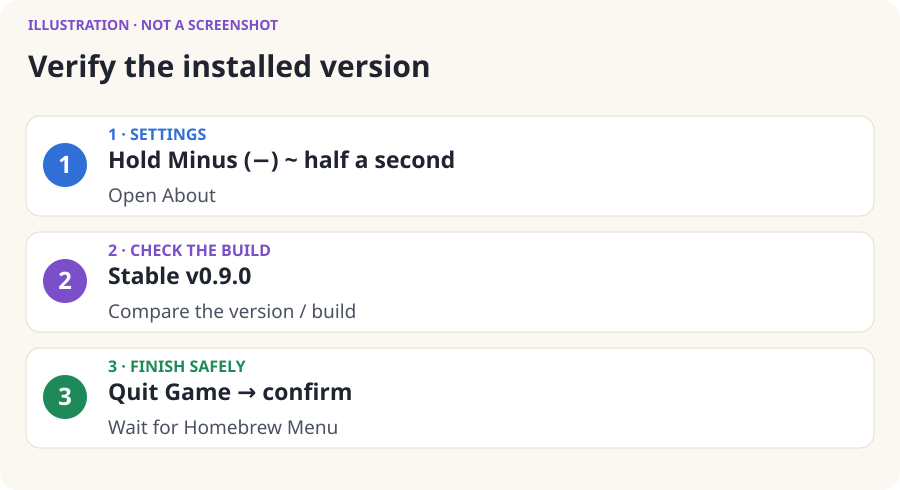
- In the game, hold Minus (−) for about half a second. This opens the port’s settings menu.
- Open About. Check the version/build information against v0.9.0. If an old version is still shown, follow Update without losing your progress below.
- For a first test, keep the normal settings. Stock-clock consoles can run races at 30 FPS. This booklet does not require overclocking.
- To quit normally, open the Minus menu, choose Quit Game, and confirm. Wait to return to Homebrew Menu. Do not remove the SD card while the game is saving.
17 / 17 · Nintendo Switch
Update without losing your progress

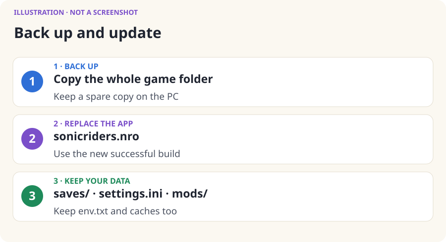
- Quit Sonic Riders normally before you update. Connect the SD card to your computer using the same safe steps as before.
- Back up first. Copy the whole
/switch/sonicriders/folder from the SD card to a safe folder on your computer. A backup is a spare copy. Keep it until you know the update works. - Open the Nintendo Switch release page. For a future update, check for a newer release for this same platform. Download its matching setup ZIP.
- Extract the new ZIP to a new normal folder on the PC. Open its installer. Select your same own game image and the same SD card root.
- Build and install. Keep the existing full game image if it is already verified on the card; Copy the disc image too can be unticked for that case.
- For a manual update, copy only the new
sonicriders.nrointo the existing game folder and replace that file. - Keep
saves/,settings.ini,mods/,env.txtif present, and cache files. Your texture packs live undermods/. Do not delete the old game folder or replace it with an empty folder. - Eject safely. Launch again. Open Minus → About to check the version/build. Also check that your save and chosen settings are still there.
Troubleshooting
Something looks wrong?
Find the sentence that sounds like your problem and open it.
My download does not contain the right installer
Check the full ZIP name: SonicRiders-Switch-Setup-v0.9.0.zip. Open the release page and choose that asset. Source code (zip) is not the setup package. Keep all extracted files together.
The installer cannot find setup files
Close it. Right-click the original ZIP and choose Extract All…. Open the normal extracted folder. The EXE, setup, and tools must be together. Do not run a lone EXE copied out of the ZIP.
It says the game image is wrong
Read the exact message. Only the clean USA GameCube disc, revision 0, is supported. Select the full correct dump. For a checksum or incomplete-copy error, dump your own disc again using CleanRip’s checks. A different filename cannot fix different contents. RVZ/WIA must preserve the original disc data. See the full-image fingerprint on the disc page.
Back to that page’s stepsThe app or disc file is missing
Wait for a successful build first. Open the output folder and copy sonicriders.nro to /switch/sonicriders/. Put your full ISO/GCM beside it. Show file name extensions to catch .nro.nro or .iso.iso. RVZ stays on the PC; copy the converted ISO from baserom instead.
My folders look different
The card needs /switch/sonicriders/sonicriders.nro. An extra switch inside switch is wrong. So is copying the Windows setup folder to the card. Open the correct destination and copy only the files shown in the finished-tree picture. Preserve the other apps already on the card.
Sonic Riders is not in Homebrew Menu
Check that you are using the correct platform’s working Homebrew Menu. Check for sonicriders.nro directly in /switch/sonicriders/. Eject safely after correcting the files, then reopen the menu. A ZIP or Windows EXE will not appear as a console app.
The SD card is not found
Check that File Explorer can open the card. In the installer, press Refresh, then try Other… and pick its top folder. If Windows asks to format it, cancel. Check the reader and your existing homebrew setup before continuing.
Back to that page’s stepsThe installer says INSTALL FAILED
Keep the window open and read the last error. Find setup.log beside the installer EXE. If it reports insufficient space, free the stated space. If it reports a download failure, restore your connection and retry. If it reports unsupported path characters, extract to the short English-letter PC folder shown earlier. If a hash check fails, do not bypass it. Save the log and report the error if retrying does not fix it.
I get a black screen or a crash
First check that you launched Homebrew Menu by holding R while opening an installed game. Album mode has too little memory. Next check the full ISO/GCM and exact folder. These checks fix setup mistakes; they do not establish the cause of every crash. If it still fails, preserve the logs and report it.
Back to that page’s stepsKnown problems that are still open
Unresolved: rare hangs on Now Loading are tracked in issue #6. Texture packs can briefly freeze the original Switch when new textures load. Test a fresh install before adding packs. There is no verified fix for every loading hang. An old version still appearing after an update is reported in issue #31; its cause is still being investigated.
Back to that page’s stepsAbout still shows the old version
Compare the new local NRO with the file in /switch/sonicriders/. Make sure you copied to the card you actually use. Follow the manual update route, then launch that app again and check Minus → About. Keep your backup and save. If the version remains old, report both the downloaded ZIP name and the displayed version. Do not assume this identifies the cause of issue #31.
Bug reports
Report a problem

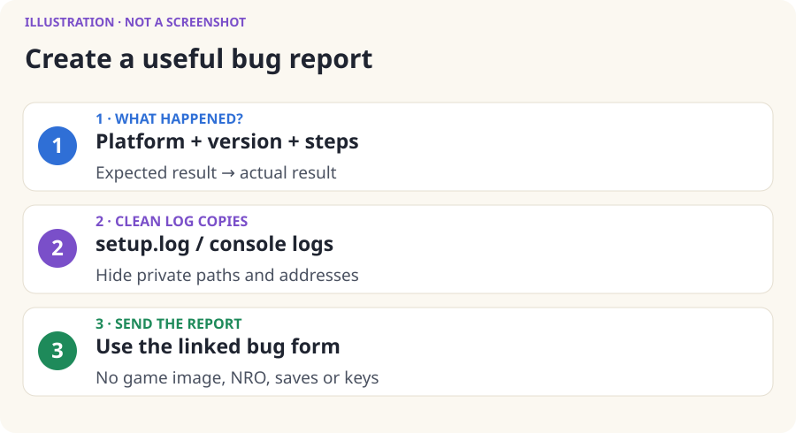
- For an installer problem, open the normal extracted setup folder. Find
setup.logbeside the installer EXE. Open it in Notepad. Save a copy before retrying. - For a console problem, quit normally if possible. Before launching again, copy
sonicriders.logandsonicriders.prev.log, if present, from/switch/sonicriders/to the computer. - Read the copies before sharing. Replace personal paths, names, IP addresses or other private details with
[removed]. Do not remove the error messages. - Open the bug report form. A free GitHub account is needed to post a report. Reading guides and downloading do not need one.
- Write Nintendo Switch, the ZIP filename, version/build shown in About, console model, firmware, homebrew loader/version, and exactly what you clicked or played. Say handheld or docked, stage, character, gear, player count, settings and any known clock settings. If you do not know a number, say “unknown”.
- Add the error text and the cleaned log copies. Say what you expected, what happened, and whether you can make it happen again. A cropped photo of the error can help; hide private details.
- Never attach your ISO/RVZ, NRO, saves, console keys, passwords, generated code or game assets. Those are not needed for a useful public report.
Bug report template
Platform: Nintendo Switch Setup ZIP: SonicRiders-Switch-Setup-v0.9.0.zip Version/build in About: … Firmware and homebrew loader/version: … Handheld or docked; known clocks: … What I did, one step at a time: … What I expected: … What happened / exact error: … Does it happen again? … Cleaned log copies attached: …
Finish line
Installation complete
Keep your backup until you have confirmed that the game works. Come back to this booklet when updating or troubleshooting.
Sources and what was checked
The published ZIPs were downloaded and hash-checked, and their installers were run on Windows into disposable SD folders. The real installer captures come from those published programs. Console steps use the project’s hardware reports and the linked homebrew instructions. Drawn console screens are marked as illustrations.